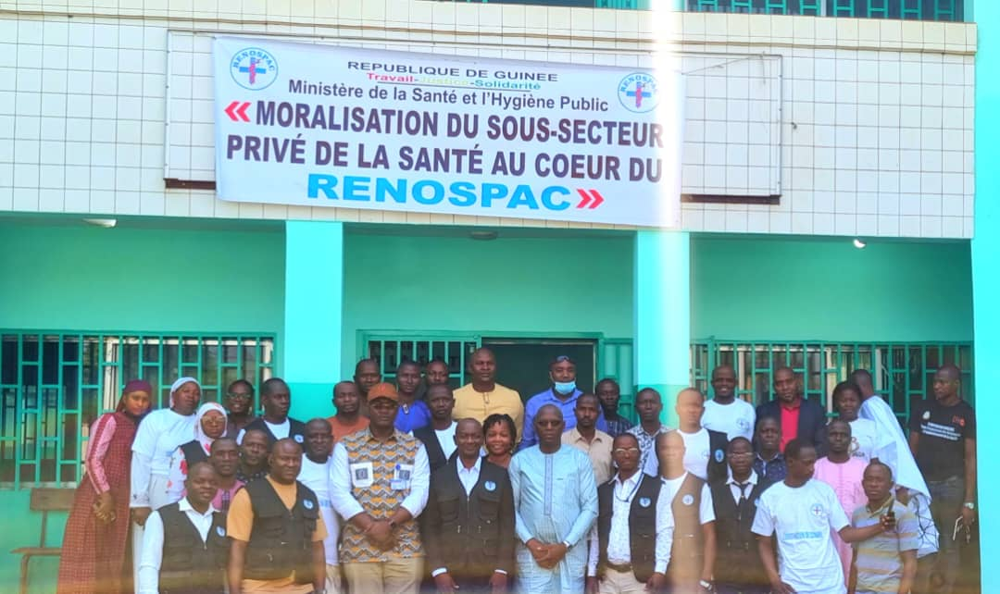
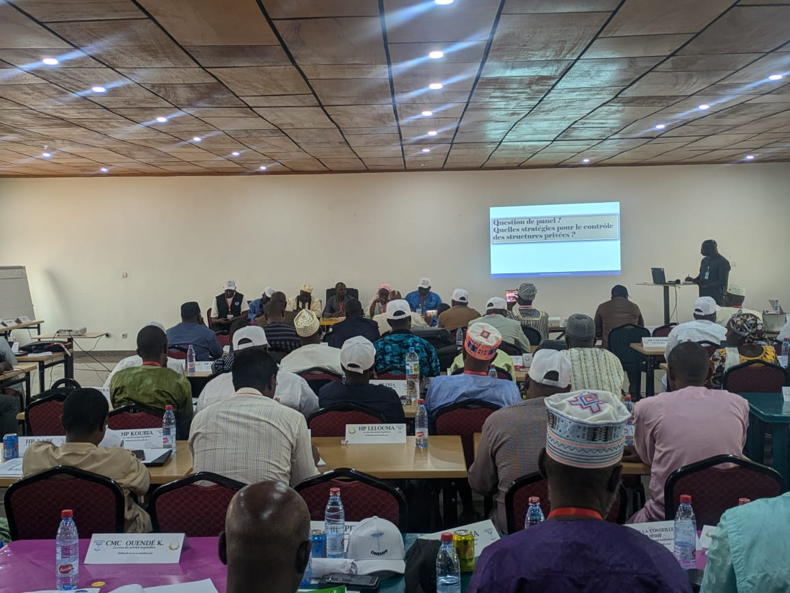
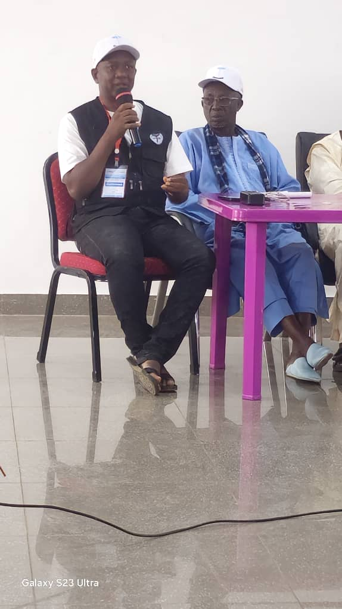
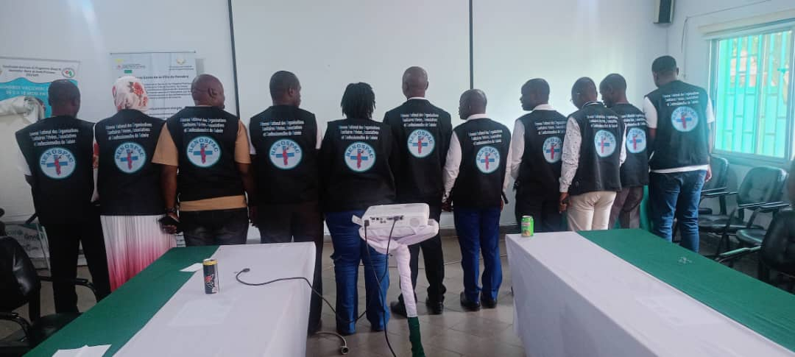
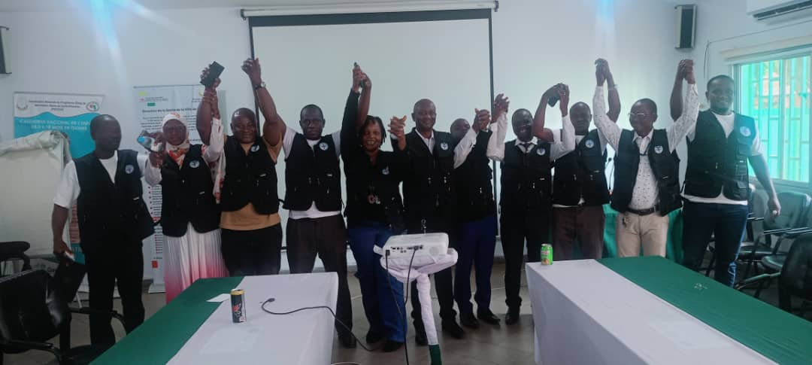
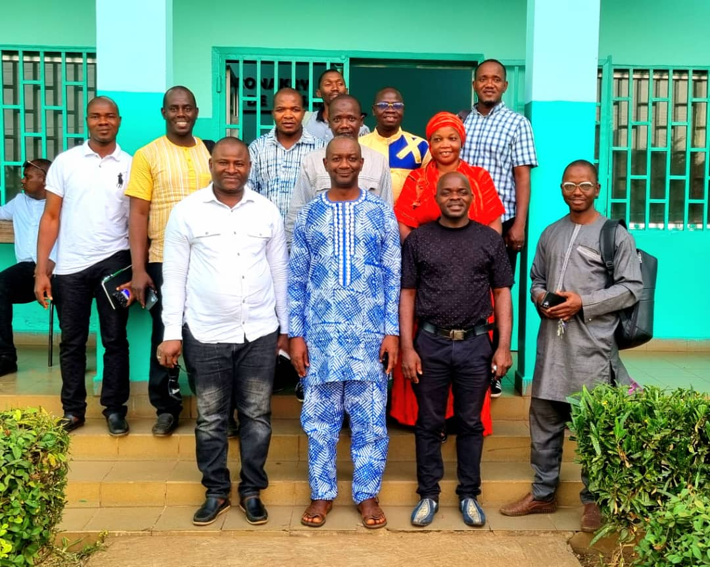
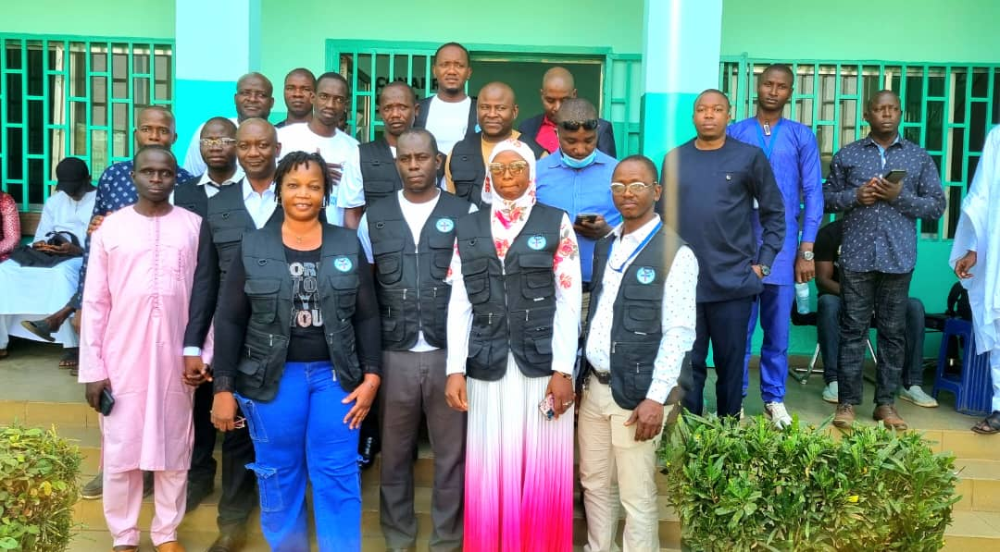
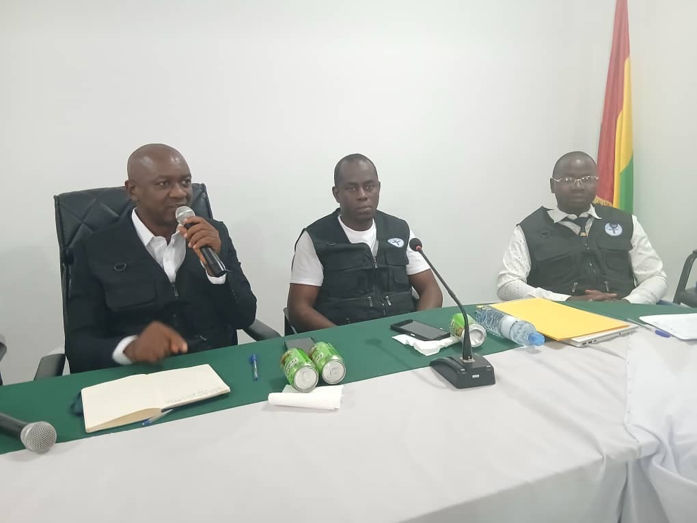

République de Guinée · Santé privée
Le Réseau National des Organisations Sanitaires Privées, Associatives et Confessionnelles de Guinée regroupe près de 1 400 structures sanitaires à travers 9 plateformes nationales, aux côtés du Ministère de la Santé et de l'Hygiène Publique.
RENOSPAC
Réseau National des Organisations Sanitaires Privées, Associatives et Confessionnelles
0
structures membres
0
plateformes nationales
≈ 0
structures sanitaires privées représentées
0
plateformes nationales fédérées
100%
du territoire national couvert par nos plateformes

Qui sommes-nous ?
Le Réseau National des Organisations Sanitaires Privées, Associatives et Confessionnelles de Guinée (RENOSPAC) est une organisation regroupant et représentant près de mille quatre cents (1 400) structures sanitaires privées en Guinée à travers neuf plateformes nationales.
Le secteur privé de la santé représente une part significative de l'offre de soins en complément du secteur public. Il contribue à l'accessibilité des services de santé, notamment dans les zones urbaines où la demande est forte. Les cliniques privées, associatives et confessionnelles jouent un rôle essentiel dans la diversification des services — consultations spécialisées, maternités, laboratoires, imagerie médicale — et participent à la réduction de la charge des formations sanitaires (FOSA) publiques et à l'amélioration de la couverture sanitaire nationale.
Créé à l'initiative des responsables des associations de cliniques privées lucratives et non lucratives, le réseau constitue l'unité de coordination de toutes ces organisations sanitaires, avec l'orientation des autorités sanitaires à travers la Direction Nationale des Établissements Hospitaliers Publics et Privés (DNEHPP).
Voir nos neuf plateformesNotre mission
« Défendre les intérêts des cliniques privées, promouvoir leur conformité réglementaire et renforcer leur crédibilité institutionnelle. »
Notre but
Accompagner le Ministère de la Santé, à travers la DNEHPP, dans la mise en œuvre et l'exécution de la stratégie nationale de développement sanitaire privé en Guinée.
Où sommes-nous ?
À travers ses plateformes, le RENOSPAC représente les FOSA privées de santé sur toute l'étendue du territoire national.
Nos plateformes
Les organisations membres qui composent l'unité de coordination du RENOSPAC.
Nos objectifs
Galerie
Ateliers, panels et rencontres du RENOSPAC aux côtés du Ministère de la Santé et de l'Hygiène Publique.







Contact
Promoteur d'une FOSA privée, associative ou confessionnelle ? Le RENOSPAC vous oriente et vous accompagne, notamment dans le processus de recherche d'agréments.
Siège
Conakry, République de Guinée
Téléphone / WhatsApp
+224 6XX XX XX XX (à compléter)
contact@renospac-guinee.org (à compléter)
Horaires
Lundi – Vendredi · 8h30 – 17h00